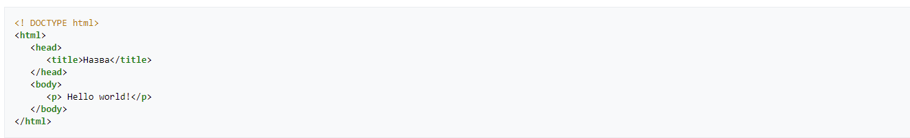

Історія розвитку HTML
1980 року фізик Тім Бернерс-Лі, який на той час був співробітником CERN, запропонував і прототипував систему INQUIRE, яка мала полегшити сумісне користування документами для дослідників CERN.
1989 року Бернерс-Лі запропонував впровадити на базі Internet гіпертекстову систему документів.[2]
Вже наприкінці 1990 року він розробив HTML і написав браузер та серверне програмне забезпечення для запропонованої системи. У цьому ж році Тім Бернерс-Лі та Роберт Кайо, інженер інформаційних систем CERN, подали спільну заявку на фінансування проєкту, проте цей проєкт не був офіційно прийнятий CERN.
Наприкінці 1991 року Тім Бернерс-Лі опублікував в Інтернеті перший загальнодоступний опис мови розмітки HTML, відомий як документ «HTML-теги» (HTML Tags).[3] В ньому були описані 18 елементів первісної, відносно простої схеми розмітки HTML. Всі вони, за винятком тегу гіперпосилання, були жорстко підпорядкований внутрішньому SGML-формату документації CERN. Одинадцять із тих елементів ще й досі існують у HTML4.[4]
Бернерс-Лі розглядав HTML як похідну мову від SGML, і в середині 1993 року Спеціальна Комісія Інтернет-розробок (IETF) офіційно визначила її такою, опублікувавши першу специфікацію HTML: «Hypertext Markup Language (HTML)» Internet-проєкт, авторами якої були Тім Бернерс-Лі та Ден Конолі. Ця специфікація вже містила визначення типу документа, яке чітко зазначало граматику HTML.[5]
Проєкт втратив силу через 6 місяців, але відзначився використанням для браузера NCSA Mosaic тегу додавання зображень, відобразивши філософію IETF щодо базування стандартів на успішних прототипах.[6] Так само пізніше в 1993 році в конкуруючому Інтернет-проєкті Дейва Раджетта «HTML+ (Hypertext Markup Format)», було запропоновано стандартизувати вже запроваджені браузерами сенсаційні на той час можливості, такі як таблиці та перші інтерактивні форми.
На початку 1994 року, після того, як проєкти «HTML» і «HTML+» втратили свою силу, IETF створив Робочу групу HTML (HTML Working Group). 1995 року Робоча група HTML завершила роботу над документом «HTML 2.0» (опублікований як RFC із номером 1866), першою специфікацією, що мала бути використана як базовий стандарт для подальших вдосконалень HTML.[6] Версія 2.0 окреслювала чіткі відмінності між новим виданням специфікації та попередніми проєктами.
Подальші розробки під заступництвом IETF зіштовхнулися з конкуруючими інтересами. З 1996 року специфікації HTML затверджувались Консорціумом W3C, враховуючи доповнення до розмітки, що впроваджувалися компаніями-розробниками браузерів. Тим не менш, у 2000 році HTML стала міжнародним стандартом (ISO/IEC 15445:2000).
Остання специфікація HTML, опублікована W3C наприкінці 1999 року, має назву «HTML 4.01 Recommendation». Усі спірні питання та помилки цієї специфікації були офіційно визнані у списку друкарських помилок, опублікованому в 2001 році.
Версії
Тім Бернерс-Лі представив HTML в дослідницькому центрі CERN в Женеві 1989 року
- HTML (без номера версії, 3 листопада 1992): найперша версія, орієнтована лише на текст
- HTML (без номера версії, 30 квітня 1993): до тексту додано атрибути, які визначають курсивне або жирне написання літер, та зображення.
- HTML+ (листопад 1993): заплановані доповнення, які потрапили до наступних версій, але ніколи не були відокремлені як HTML+.
- HTML 2.0 (листопад 1995): визначена стандартом RFC 1866 версія з підтримкою форм. Статус цього стандарту вже «історичний», також визнані застарілими попередні версії.
-
HTML 3.0: версія, яка не зазнала поширення, оскільки із випуском браузера Netscape Navigator версії 3 цей стандарт вже був застарілим. - HTML 3.2 (14 січня 1997): були додані численні можливості, такі як таблиці, обтікання текстом зображень, інтеграція аплетів.
- HTML 4.0 (18 грудня 1997): були додані таблиці стилів, скрипти та фрейми. Також відбулось розділення на Strict (суворе дотримання стандартів), Frameset (з підтримкою фреймів), Transitional (перехідний). 24 квітня 1998 було випущено виправлену версію цього стандарту.
- HTML 4.01 (24 грудня 1999): заміна версії HTML 4.0, містить численні дрібні виправлення.
- HTML 5 (Working Draft, 5 квітня 2008):[10] HTML 5 має новий словник, побудований на основі HTML 4.01 та XHTML 1.0. Також перероблена і розширена пов'язана з HTML специфікація DOM.
- HTML 1.0 (26 січня 2000): висловлення стандарту HTML 4.01 засобами XML. 1 серпня 2002 було випущено оновлену редакцію стандарту.
- HTML 1.1 (31 травня 2001): після того, як XHTML буде розділено на модулі, стандарт XHTML 1.1 визначатиме сувору версію, в якій не буде запроваджених HTML 4 можливостей Frameset та Transitional.
- HTML 2.0 (розробка припинена в 2010 році): ця версія вже не базується на HTML 4.01 і додає деякі нові теги. Буде завершено розділення між представленням та вмістом.
Документ HTML
Для поліпшення взаємодії SGML вимагає аби кожна похідна мова (HTML у тому числі) визначала свою кодову таблицю для кожного документа, яка складається з репертуару (перелік різноманітних символів) та позиції символу (перелік цифрових посилань на символи з репертуару). Кожен документ HTML — це послідовність символів із репертуару.
HTML використовує найповнішу кодову таблицю UCS (англ. Universal Character Set — Універсальний Набір Символів).
Проте однієї кодової таблиці недостатньо для того, щоб браузери могли правильно відтворювати документи HTML. Для цього браузерам потрібно «знати» специфічну кодову таблицю документа, яку автор має зазначати завжди в елементі meta із параметром charset. За замовчуванням використовується кодова таблиця ISO-8859-1, відома також як Latin-1.
РозміткаРозмітка в HTML складається з чотирьох основних компонентів: елементів (та їхніх атрибутів), базових типів даних, символьних мнемонік та декларації типу документа.
Загальна структураДокумент HTML 5.2 складається з трьох частин:
- Декларація типу документа (англ. Document type declaration, Doctype), на початку документа, в якій визначається тип документа (DTD).
- Шапка документа (знаходиться в межах елемента head), в якій записано загальні технічні відомості або додаткова інформація про документ, яка не відтворюється безпосередньо в браузері;
- Тіло документа (може знаходитися в елементі body), в якому міститься основна інформація документа.
Нижче наведено приклад загальної структури HTML-документа:
